AWS Research Cloud Operations#
Logging is enabled throughout the NCCoE AWS research cloud environment to meet security and regulatory compliance requirements.
Logging#
Amazon Security Lake was deployed to centralize the collection of security data from all accounts within the NCCoE Organization to provide a comprehensive view of the security data across the AWS research environment. As mentioned in Amazon Security Lake, the configured Security Lake supports incident response efforts where needed.
Cloud Environment Review#
In preparation for production, the NCCoE AWS research environment endured several cloud environment reviews. The Well-Architected Management and Governance (M&G) guide provided a mechanism for the NCCoE to ensure a clear path towards alignment with standards and best practices. NCCoE conducts yearly cloud environment reviews to ensure up-to-date documentation.
Backups and Disaster Recovery#
AWS Backup is a fully managed service that centralizes and automates data protection across AWS services and hybrid workloads. NCCoE set up backups in individual member accounts, and cross-account monitoring is enabled for the organization, providing the operations team with visibility into all successful and failed backups. Backups are enforced via a tagging policy that applies a “backup” tag to all EC2 instances. This tag is then picked up by the AWS backup service, which backs up all instances with the proper tag. Backups are stored in a vault in each member account as opposed to centrally to enable each research lab to restore its own backups as needed. Backups are maintained in accordance with our compliance requirements and utilize a tiered storage and lifecycle policy to maximize savings opportunities.
Billing#
AWS Billing facilitates the understanding and management of our monthly AWS charges. The NCCoE leverages many AWS Billing features to continuously manage AWS charges, including:
AWS Budgets to set a budget amount for each member account to manage against
Anomaly Detection to alert on cost anomalies
Cost explorer and reports to view and analyze our costs and usage and customize saved reports.
AWS Research Cloud Governance#
Cloud Center of Excellence#
The NCCoE established a Cloud Center of Excellence (CCOE) to improve efficiency, enhance security and compliance practices, and drive innovation. AWS research cloud CCOE meetings are held monthly to ensure continuous improvement and operational excellence. Members of the governance board include, but are not limited to, our AWS cloud systems engineer, IT Program Manager, and IT Security and Operations lead. The following components are reviewed monthly at the NCCoE Cloud Center of Excellence meetings:
Review IAM and Identity Accounts#
The NCCoE reviews existing, new, and deleted IAM accounts to ensure awareness of any access changes. NCCoE reviews all failed logins (both IAM accounts and Identity) to ensure awareness of failed access attempts.
Review of AWS Member Accounts#
The NCCoE reviews all AWS organization accounts added and deleted to ensure awareness and proper change control procedures.
Review Budgets#
The NCCoE reviews overall budgets, member account budgets, budget trends, anomalies, costs by region, costs by service, and many other factors to ensure a comprehensive understanding of AWS charges and forecasts.
Review Backups#
The NCCoE reviews all backup reports to ensure backups are occurring as expected and discusses and addresses any failures or messages generated by the backup service.
Review Tagging Report#
The NCCoE reviews the tagging report to ensure compliance with our tagging policies.
Review Trusted Advisor Reports#
The NCCoE reviews the Trusted Advisor reports on all accounts with AWS support (required for detailed report) to review findings and recommendations.
Review Activity Outside of US East 1#
The NCCoE primarily operates in US East 1 and reviews all activity outside of US East 1 to identify any compliance violations.
Review Security Hub#
The NCCoE reviews Security Hub for the overall organization and each individual member account to ensure all listed security issues are understood and addressed where possible.
Review Amazon GuardDuty#
The NCCoE reviews findings reported by Amazon GuardDuty to ensure a good understanding of our security posture.
Review Amazon Macie#
The NCCoE reviews findings reported by Amazon Macie to identify any sensitive data in the environment and ensure policy compliance.
Review Security Hub Compliance Analyzer (SHCA)#
The NCCoE reviews findings reported by the Security Hub Compliance Analyzer to ensure a good understanding of our security posture.
Review Prowler#
The NCCoE reviews findings reported by Prowler to ensure a good understanding of our security posture.
Dashboards#
To facilitate reviews and gain a comprehensive understanding of the AWS organization, the NCCoE has created dashboards focused on key areas of interest. Detailed information is available on the AWS dashboard site.
AWS CloudWatch Dashboard#
The NCCoE captures and displays in dashboards most of the information discussed in the Cloud Center of Excellence meetings, including but not limited to:
Root Login
Failed Logins
Users created
Users Deleted
VPC changes
Key pairs creation/deletion
Security group changes
IAM roles and policy changes
CloudFormation stacks Events
KMS Key changes
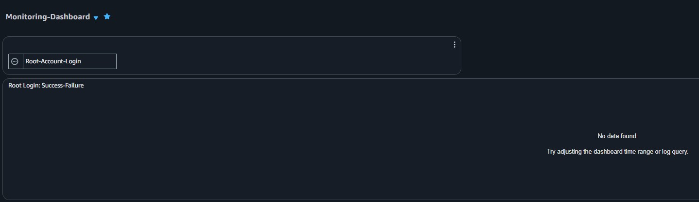
Screenshot 1: Root Account login dashboard#
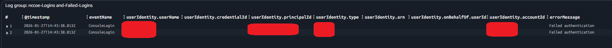
Screenshot 2: Failed login dashboard#
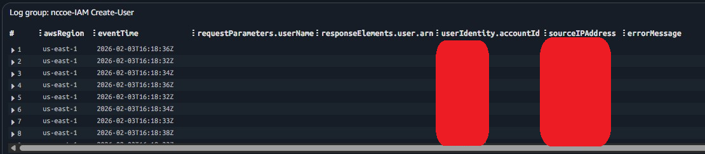
Screenshot 3: New user creation dashboard#
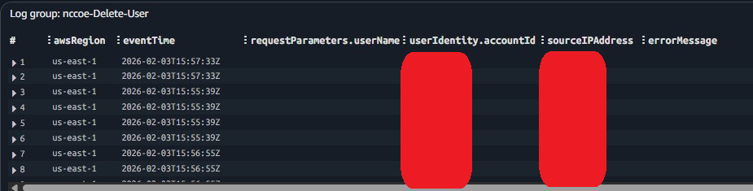
Screenshot 4: User deletion dashboard#
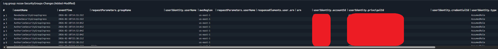
Screenshot 5: Specific security group changes#
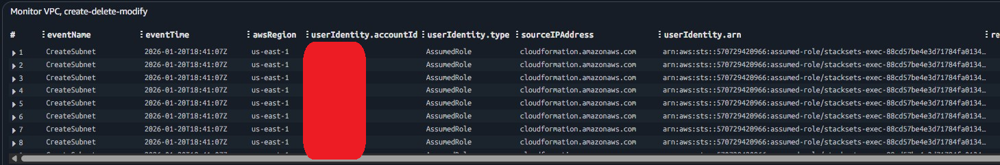
Screenshot 6: VPC creation and deletion changes#
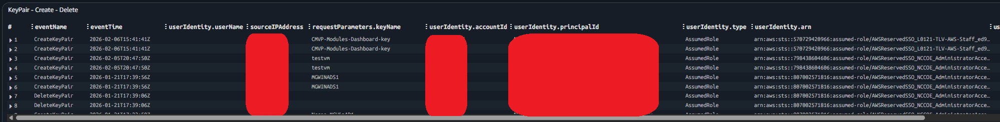
Screenshot 7: KeyPair creation and deletion changes#
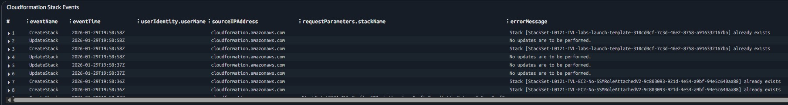
Screenshot 8: Cloudformation Stack events#
Cloud Intelligence Dashboard#
The Cloud Intelligence Dashboard is a comprehensive tool for visualizing and analyzing AWS costs and usage data. The NCCoE reviews all available billing and usage summaries for a holistic view of costs and services.
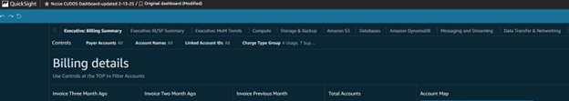
Screenshot 9: AWS Executive billing dashboard#
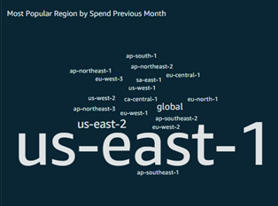
Screenshot 10: Region-based spend dashboard#
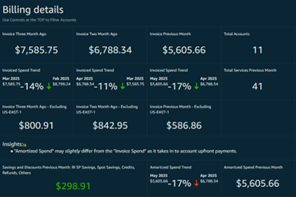
Screenshot 11: AWS billing details#